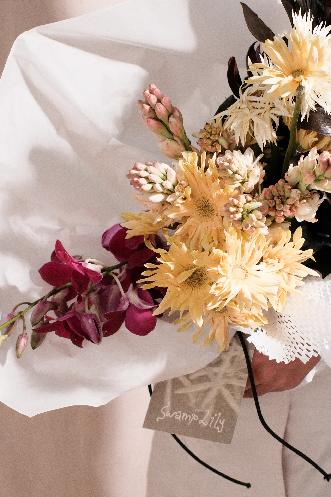
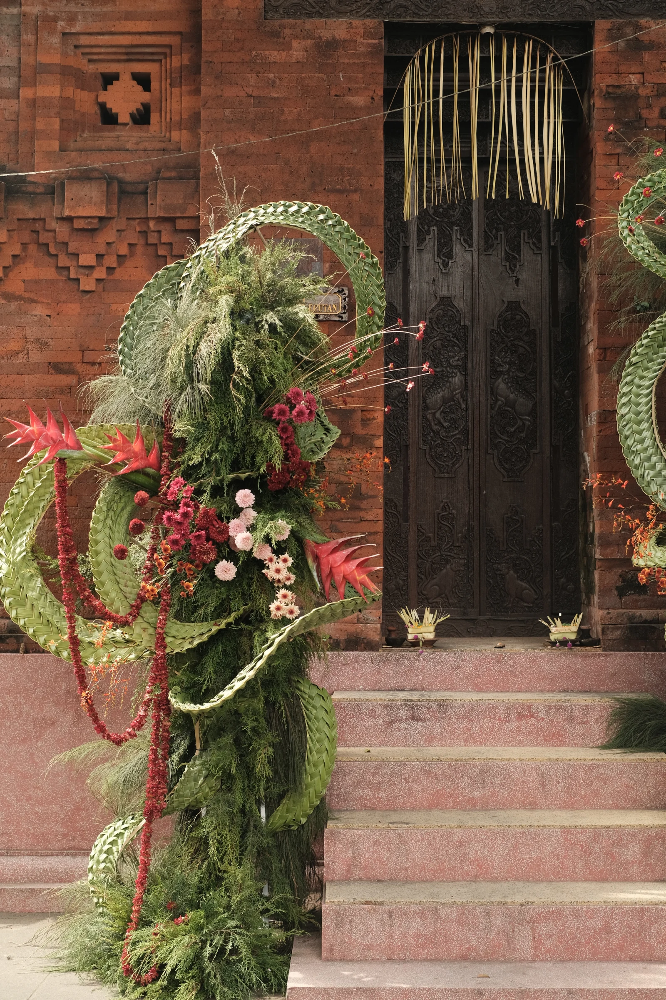

Swamp Lily is a floral design studio based in Bali. We create to tell stories through the fascinating lens of the botanical world, exploring the idea of alternative beauty—to create everything in between.

ARRANGEMENTS
WEDDINGS STYLING & CURATION
STYLING & CURATION